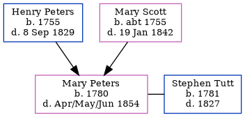

Mary Tutt (née Peters) 1780 - 1854
[ Home ] | [ Calendar ] | [ Surnames Index ] | [ Census Index ] | [ Family History ]The child of Henry Peters and Mary Scott, Mary Peters, the four times great-aunt of Nigel Horne, was born in Folkestone, Kent, England in 17801. She married Stephen Tutt in Folkestone on Jun 19, 1802. In 1841, she was living at her birthplace1.
She died in Apr/may/jun 1854 in Kent, England2.
Parents
- Henry was born in 1755
- Mary was born c. 1755
Citations
- 1841 England Census Online publication - Provo, UT, USA: The Generations Network, Inc., 2006.Original data - Census Returns of England and Wales, 1841. Kew, Surrey, England: The National Archives of the UK (TNA): Public Record Office (PRO), 1841. Data imaged from the National
- England & Wales, FreeBMD Death Index: 1837-1915 Online publication - Provo, UT, USA: The Generations Network, Inc., 2006.Original data - General Register Office. England and Wales Civil Registration Indexes. London, England: General Register Office. © Crown copyright. Published by permission of the Cont
Family Tree
Generated by ged2site. Last updated on Jun 11, 2024